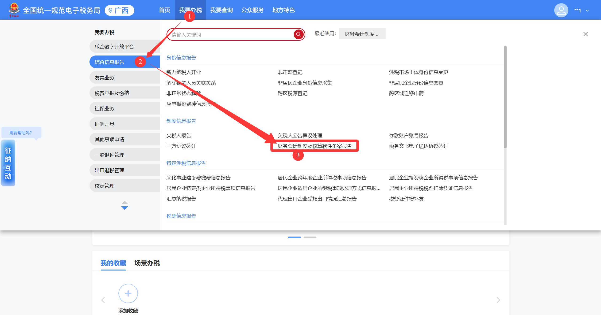
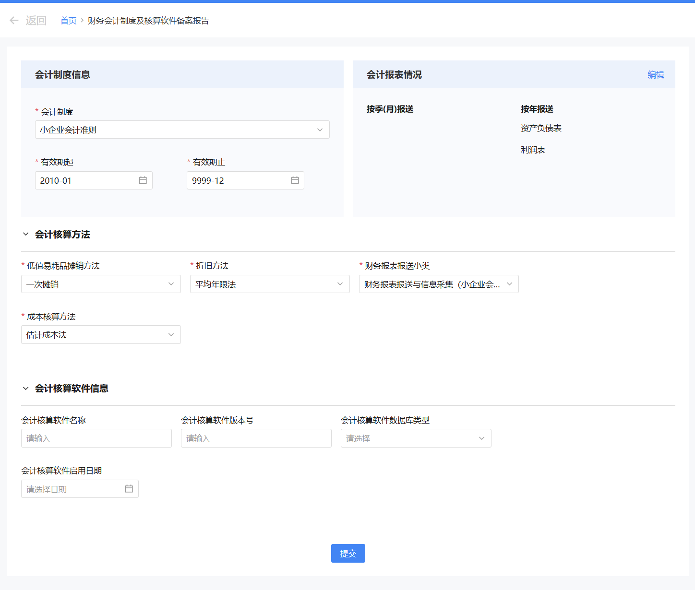
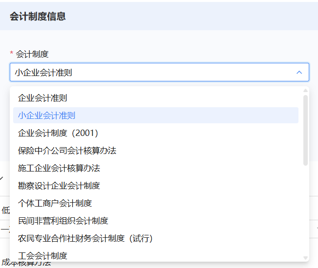
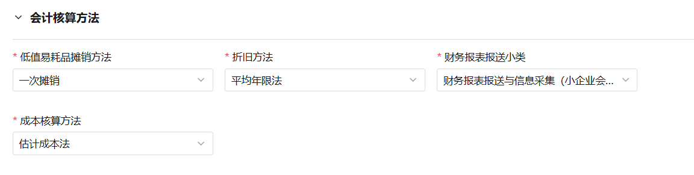
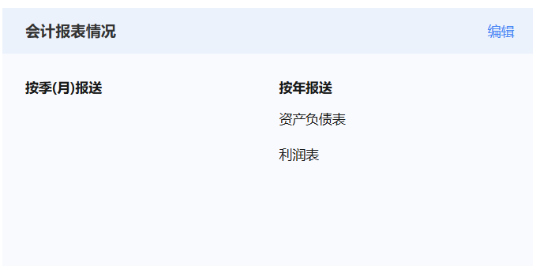
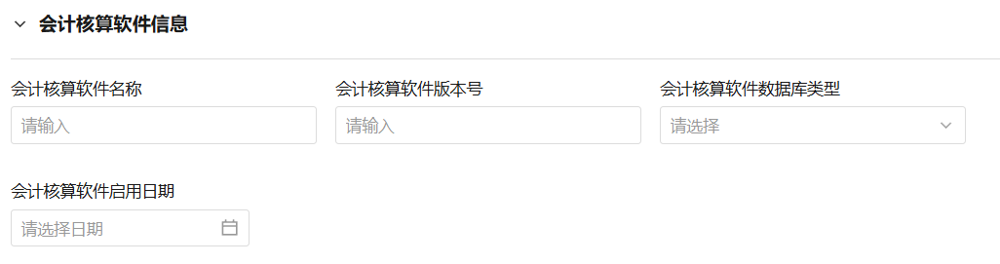
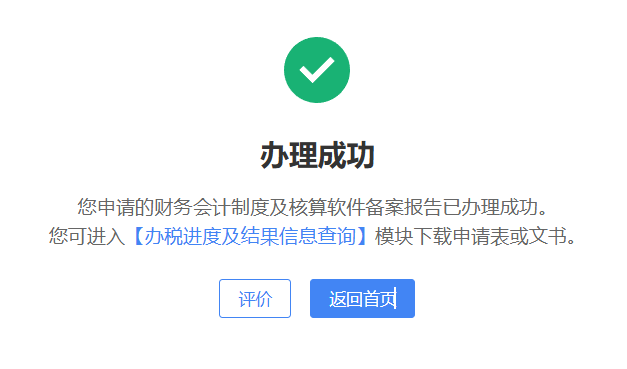

财务会计制度及核算软件备案，是纳税人向税务机关报告企业所采用的会计准则、核算方法及财务软件信息的重要事项。
法律依据：《中华人民共和国税收征收管理法》规定，从事生产、经营的纳税人应当自领取税务登记证件之日起 15日内，将其财务、会计制度或者财务、会计处理办法等信息报送税务机关备案。使用计算机记账的企业，还应当在使用前将会计核算软件报税务机关备案。
| 项目 |
说明 |
| 适用对象 |
所有从事生产、经营的纳税人（包括新办企业和已办企业） |
| 办理时限 |
自领取税务登记证件之日起 15日内 必须完成备案 |
| 核算软件备案 |
使用计算机记账的，应当在使用前向主管税务机关备案 |
系统提供多种会计制度供选择，包括小企业会计准则、企业会计准则、企业会计制度，以及适用于特定行业或组织类型的专项制度（如个体工商户会计制度、民间非营利组织会计制度、农民专业合作社财务会计制度等）。请根据企业实际情况及主管部门要求选择适用的会计制度，如有疑问请咨询主管税务机关或专业会计人员。
📘 小企业会计准则
适用范围：在中华人民共和国境内依法设立的、符合《中小企业划型标准规定》小型标准的企业
- 特点：简化核算，科目设置较少，操作简便
- 不适用情形：股票或债券在市场上公开交易的小企业；金融机构或其他具有金融性质的小企业；企业集团内的母公司和子公司
📗 企业会计准则
适用范围：在中华人民共和国境内设立的企业，通常适用于大中型企业
- 特点：核算全面，科目设置完整
- 适用情形：需要对外融资、准备上市，或业务较为复杂的企业
📙 企业会计制度
适用范围：除金融保险企业以外的所有符合条件的大、中型企业
- 特点：介于《小企业会计准则》和《企业会计准则》之间，目前使用较少
电子税务局首页
→
我要办税
→
综合信息报告
→
制度信息报告
→
财务会计制度及核算软件备案报告
1
登录电子税务局，依次点击 【我要办税】 → 【综合信息报告】 → 【制度信息报告】 → 【财务会计制度及核算软件备案报告】

2
系统自动带出部分预填信息，纳税人进行确认，对预填有误的进行修改

3
填写 会计制度信息：
• 会计制度：从下拉菜单中选择适用的会计制度
• 有效期起：填写企业成立日期或开始执行该制度的日期
• 有效期止：如长期执行，可填写"9999-12"

4
填写 会计核算方法：
• 低值易耗品摊销方法：根据企业实际情况选择"一次摊销"或"五五摊销"
• 折旧方法：根据企业实际情况选择适用的折旧方法
• 成本核算方法：根据企业经营类型选择适用的成本核算方法
• 财务报表报送小类：系统将根据所选会计制度自动匹配

5
填写 会计报表报送情况：
• 按季（月）报送：选择需要按季或按月报送的报表类型
• 按年报送：选择需要按年报送的报表类型

6
填写 会计核算软件信息（非必填，如使用计算机记账可填写）：
• 会计核算软件名称：填写企业实际使用的财务软件名称
• 会计核算软件版本号：填写软件实际版本号
• 会计核算软件数据库类型：填写软件实际使用的数据库类型，可咨询软件供应商
• 会计核算软件启用日期：填写开始使用该软件记账的日期

7
核对所有信息无误后，点击 【提交】 完成备案

✅ 备案成功后，系统会显示"备案成功"提示，建议截图留存备查。
⚠️
必须15日内办理：从事生产、经营的纳税人应当自领取税务登记证件之日起 15日内 完成备案，逾期可能面临处罚。
⚠️
信息变更需重新备案：如会计制度、核算方法、财务软件等发生变更，应及时向税务机关重新备案，不可擅自更改。已报送财务报表后，不能修改对应属期的会计制度备案。
⚠️
小企业会计准则限制：以下三类小企业不适用《小企业会计准则》：① 股票或债券公开交易的小企业；② 金融机构或其他具有金融性质的小企业；③ 企业集团内的母公司和子公司。
Q1应该选择哪种会计制度？
A
请根据企业实际情况选择。一般而言，规模较小、不对外筹集资金的企业可选择《小企业会计准则》；需要对外融资、准备上市或业务较为复杂的企业，建议选择《企业会计准则》。特定行业或组织类型（如个体工商户、民间非营利组织、农民专业合作社等）请选择对应的专项制度。如有疑问，请咨询主管税务机关或专业会计人员。
Q2企业手工记账，核算软件信息是否必须填写？
A
核算软件信息为非必填项，手工记账的企业可不填写该部分内容。
Q3备案后发现填错了，可以修改吗？
A
可以。登录电子税务局，进入【财务会计制度及核算软件备案报告】，找到已备案的记录，更正信息后重新提交即可。请注意，已报送财务报表后，不能修改对应属期的会计制度备案。
Q4逾期没有办理备案，会有什么后果？
A
根据《税收征收管理法》规定，未按时限要求办理该事项的，税务机关可责令限期改正，并可处以罚款。建议尽快补办，避免影响纳税信用评级。
✅
本节小结：
- 新办企业必须自领取税务登记证件之日起 15日内 完成财务会计制度备案
- 请根据企业实际情况选择适用的会计制度，系统提供多种制度类型供选择
- 核算软件信息为非必填项，使用计算机记账的企业可按实际情况填写
- 操作路径：我要办税 → 综合信息报告 → 制度信息报告 → 财务会计制度及核算软件备案报告
- 已报送财务报表后，不能修改对应属期的会计制度备案
- 备案信息如有变更，应及时重新备案，不可随意更改已备案信息